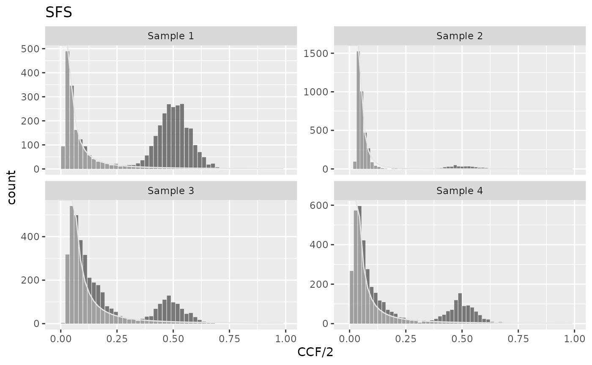

cevomod fits the VAF spectra with mixtures of the power-law-shaped and binomial distributions, a model proposed by Williams et al. (2018). The power-law components model the neutral component of tumor evolution, as proposed by Williams et al. (2016) and by Durrett (2013). The binomial components model the clones and subclones, whose true cellular frequencies are diluted in DNA sequencing. Model components are fitted sequentially, the power-law components are fitted first, then the binomial ones are fitted to the residuals of the power-law ones.
Power-law models
suppressPackageStartupMessages({
library(cevomod)
library(tidyverse)
})
cd <- test_data |>
prepare_SNVs()
#> 0 variants (0 %), have NA CCF value
#> Calculating f intervals, using CCF/2 column
#> Calculating SFS statistics
cd
#> <cevodata> dataset: test_data
#> Genome: unknown
#> SNV assays: snvs (default)
#> CNV assays: cnvs (default)
#> 4 cases, 4 samples, 1 sample per case
#> 16000 mutations total, 4000 +/- 0 mutations per case
#> Active models:Power-law components with the exponent equal to 2
Under the assumptions of the exponential tumor growth, constant mutation rate, and in the absence of selectively advantageous micro-clones, the exponent of the power-law component is equal 2 (Williams et al. (2016) and Durrett (2013)). The component is described by \[y(f) = \frac{\mu}{\beta n} \frac{1}{f^2}\] where \(\mu/\beta\) is the mutation rate per effective cell division, and \(n\) is the number of bins in the spectrum. This model can be fitted with:
cd <- cd |>
fit_powerlaw_tail_fixed(verbose = FALSE)
#> Mf_1f's not calculated yet. Calculating with default bins
#> Calculating Williams's M(f) ~ 1/f statistics, using CCF/2 column
plot_models(cd)
#> Warning in geom_bar(join_aes(bar_mapping, mapping), stat = "identity", alpha =
#> alpha, : Ignoring unknown aesthetics: widthPower-law components with the optimized exponent
Then the assumptions of the exponential tumor growth and/or constant mutation rate are violated, or in the presence of selectively advantageous micro-clones, the power-law exponent may deviate from 2. The component is then described by \[y(f) = \frac{\mu}{\beta n} \frac{1}{f^\alpha}\] where \(\mu/\beta\) is the mutation rate per effective cell division, and \(n\) is the number of bins in the spectrum, and \(\alpha\) is a constant \(\in (0, \infty\). Sample 2 is an example sample in which the model assumptions are violated. An optimized power-law model may be used to measure the sample deviation from the model assumptions:
cd <- cd |>
fit_powerlaw_tail_optim(verbose = FALSE)
plot_models(cd)
#> Warning in geom_bar(join_aes(bar_mapping, mapping), stat = "identity", alpha =
#> alpha, : Ignoring unknown aesthetics: width
get_models(cd) |>
select(sample_id, model, component, alpha)
#> # A tibble: 4 × 4
#> sample_id model component alpha
#> <chr> <chr> <chr> <dbl>
#> 1 Sample 1 powerlaw_optim powerlaw tail 1.88
#> 2 Sample 2 powerlaw_optim powerlaw tail 3.27
#> 3 Sample 3 powerlaw_optim powerlaw tail 2.02
#> 4 Sample 4 powerlaw_optim powerlaw tail 1.86In Sample 2, the power-law exponent equals 4, much higher than in 3 other samples. This can indicate for example the increasing tumor mutation rate.
Binomial components
In cevomod, the binomial components for clonal and subclonal variants are fitted to the positive part of the power-law model residuals. By default, they are fitted using the BMix package (Caravagna et al., 2020), although an alternative methods are available. In the default method, we randomly subsample the SNVs and Indels in each spectrum bin to the number given by the power-law component residual. Then, we employ the BMix to fit the VAF distribution of these variants with a mixture of 1 to 3 binomial distributions (clone plus subclones), accounting for the variant’s sequencing depth. The best model is selected based on the Bayesian Information Criterium (BIC).
cd <- fit_subclones(cd)
#> Fitting binomial models using BMix
#> Warning: replacing previous import 'cli::num_ansi_colors' by
#> 'crayon::num_ansi_colors' when loading 'BMix'
#> Warning: replacing previous import 'crayon::%+%' by 'ggplot2::%+%' when loading
#> 'BMix'
#> ✔ Loading BMix, 'Binomial and Beta-Binomial univariate mixtures'. Support : <https://caravagnalab.github.io/BMix/>
#> Warning: There was 1 warning in `reframe()`.
#> ℹ In argument: `fit_binomial_models_BMix(.data$data, N, pb, verbose)`.
#> ℹ In row 1.
#> Caused by warning:
#> ! replacing previous import 'cli::num_ansi_colors' by 'crayon::num_ansi_colors' when loading 'easypar'
plot_models(cd)
#> Warning in geom_bar(join_aes(bar_mapping, mapping), stat = "identity", alpha =
#> alpha, : Ignoring unknown aesthetics: widthIf the subclones are fitted for the power-law component with the exponent equal to 2, the evolutionary parameters can be estimated using the equations from Williams et al. (2018). In cevomod, we use the code implemented in the MOBSTER package to calculate these parameters.
Mutation rates can be obtained with
get_mutation_rates(), and the selection coefficients with
get_selection_coefficients() functions. Both functions can
be run on the cevodata objects (with the correct models fitted), or on
the model tibbles directly. This allows us to manually correct the model
tibbles before the calculation of the evolutionary parameters.
For example, one can get filter Sample 2 out from the cevodata object:
cd <- cd |>
filter(sample_id != "Sample 2") |>
fit_subclones(powerlaw_model_name = "powerlaw_fixed")
#> Fitting binomial models using BMix
cd |>
get_models() |>
get_mutation_rates()
#> # A tibble: 3 × 2
#> sample_id mutation_rate_williams
#> <chr> <dbl>
#> 1 Sample 1 46.6
#> 2 Sample 3 104.
#> 3 Sample 4 78.8
cd |>
get_models() |>
get_selection_coefficients()
#> # A tibble: 4 × 8
#> sample_id mutation_rate_williams component N_mutations subclone_frequency
#> <chr> <dbl> <chr> <int> <dbl>
#> 1 Sample 3 104. Subclone 1 724 0.982
#> 2 Sample 3 104. Subclone 2 784 0.235
#> 3 Sample 4 78.8 Subclone 1 824 0.999
#> 4 Sample 4 78.8 Subclone 2 366 0.180
#> # ℹ 3 more variables: emergence_time <dbl>, time_end <dbl>, selection <dbl>Alternative methods for fitting clones and subclones
There are 2 alternative methods for fitting clonal and subclonal components of the model.
- CliP (using
fit_subclones(method = "CliP")orfit_subclomes_clip()) - uses the CliP method published by (Jiang et al., 2021). Running CliP requires that Apptainer is installed and does not require installation of CliP and depenencies. cevomod prepares the CliP input files, runs the container and reads the CliP output files back to cevomod. The container needs to be build a priori withbuild_clip_container(), which uses the image definition file CliP.def. All of this can be done with a few lines of code:
set_containers_dir("~/containers/")
# get_containers_dir() to see the current containers dir
build_clip_container()
fit_subclones(cd, method = "CliP")
## OR the image can be built in the current working directory
build_clip_container()
fit_subclones(cd, method = "CliP")
## OR in any custom directory
build_clip_container("/custom/path/")
fit_subclones(cd, method = "CliP", clip_sif = "/custom/path/CliP.sif")See the fit_subclones() help page for more details.
- mclust (using
fit_subclones(method = "mclust")orfit_subclomes_mclust()) - fits the power-law component residuals with a Gaussian mixtures using the (mclust) package (Scrucca et al., 2016). This is a faster but approximate method for recognition of clones and subclones.
Bootstrapping
Since version 2.2.0 fit_powerlaw_tail_optim() function
has a new bootstraps argument which can be either
FALSE or an integer number indicating the number of
bootstrap samples. Bootstrapping is performed using tidyverse/rsample package and
requires it to be installed.
Bootstrapping significantly extends the model fitting time!
If bootstraps is an integer greater than 1, the SNVs
from the default assay are split by sample_id, resampled N times, new
SFS spectra are computed, and N models are fitted for each sample. The
resampled models are stored in the
<model_name>_bootstraps slot (residuals for each
resample are stored in the misc slot with the same name),
and the summarized model with confidence intervals is stored in the
model_name slot.
For demonstration purposes, we will bootstrap for 2 samples and with only 2 resamples.
cd <- cd |>
filter(sample_id %in% cd$metadata$sample_id[1:2]) |>
fit_powerlaw_tail_optim(name = "bs_model", bootstraps = 2)
#> Splitting SNVs by sample_id
#> Resampling SNVs and calculating SFSs
#> Fitting models to Sample 1 resamples
#> Warning: Recommend at least 1000 non-missing bootstrap resamples for terms:
#> `A`, `alpha`.
#> Fitting models to Sample 3 resamples
#> Warning: Recommend at least 1000 non-missing bootstrap resamples for terms:
#> `A`, `alpha`.
get_model_names(cd)
#> [1] "SFS" "powerlaw_fixed"
#> [3] "powerlaw_optim" "powerlaw_optim_subclones"
#> [5] "powerlaw_fixed_subclones" "bs_model_bootstraps"
#> [7] "bs_model"
get_models(cd, "bs_model_bootstraps")
#> # A tibble: 4 × 9
#> resample_id sample_id model component A alpha convergence value best
#> <chr> <chr> <chr> <chr> <dbl> <dbl> <int> <dbl> <lgl>
#> 1 Bootstrap1 Sample 1 bs_model powerlaw t… 44.8 1.97 0 912. TRUE
#> 2 Bootstrap2 Sample 1 bs_model powerlaw t… 62.2 1.87 0 989. TRUE
#> 3 Bootstrap1 Sample 3 bs_model powerlaw t… 107. 2.03 0 1557. TRUE
#> 4 Bootstrap2 Sample 3 bs_model powerlaw t… 117. 1.99 0 1582. TRUE
get_models(cd, "bs_model")
#> # A tibble: 2 × 9
#> sample_id model component A A.lower A.upper alpha alpha.lower alpha.upper
#> <chr> <chr> <chr> <dbl> <dbl> <dbl> <dbl> <dbl> <dbl>
#> 1 Sample 1 bs_mo… powerlaw… 53.5 45.2 61.7 1.92 1.87 1.97
#> 2 Sample 3 bs_mo… powerlaw… 112. 107. 116. 2.01 1.99 2.03Resampled models can be plotted in the same way as non-resampled
models using the plot_models() function.